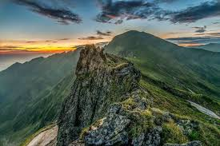
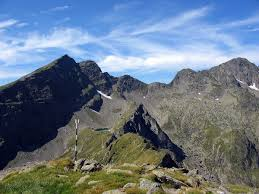
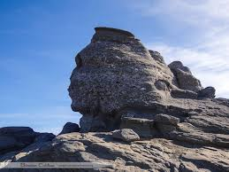

Vârfurile Carpaților
Descoperă cele mai înalte vârfuri din Carpații României
Galerie Vârfuri

Vârful Moldoveanu (2544 m) - Cel mai înalt vârf din România

Vârful Negoiu (2535 m) - Al doilea vârf ca înălțime

Vârful Omu (2505 m) - Munții Bucegi

Munții Făgăraș - Cel mai înalt masiv montan din România

Munții Bucegi - Sfinxul și Babele

Munții Retezat - Lacuri glaciare și vârfuri spectaculoase
×